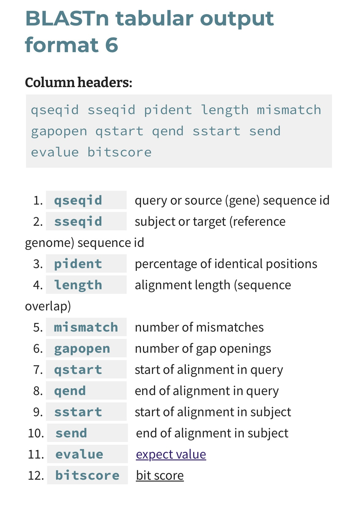
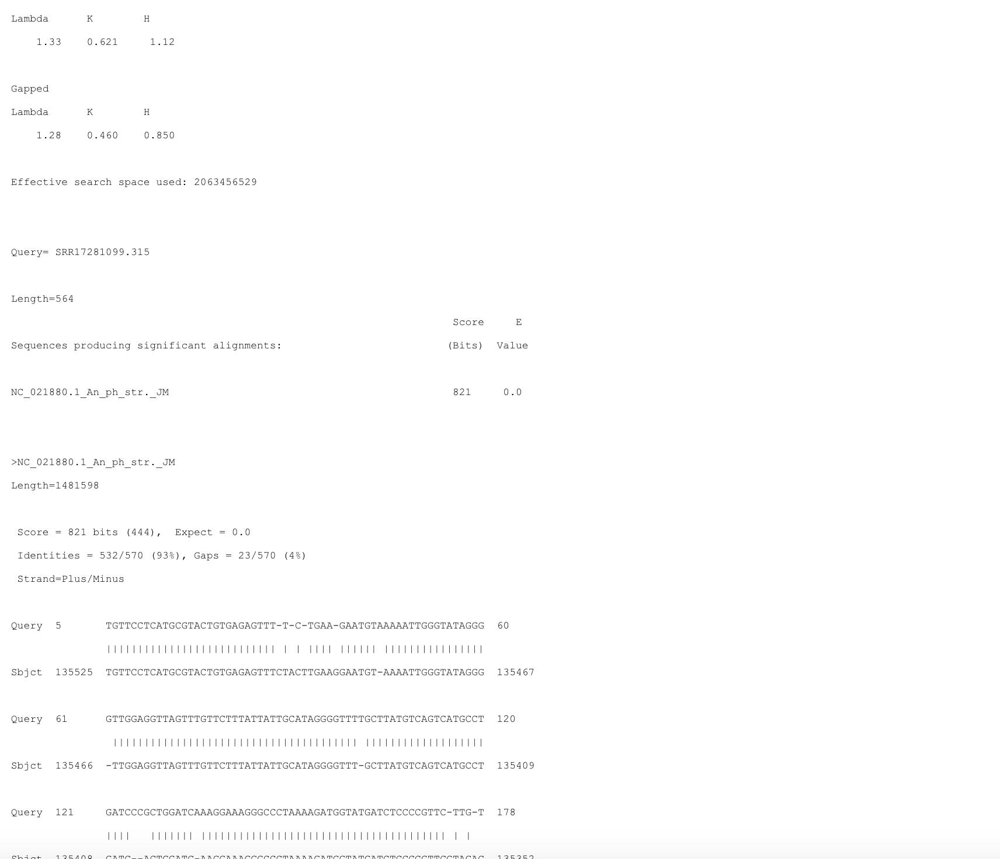

Nanopore workflow
Table of Contents
Molecular Procedures
Worked Example
The goal of this portion of the workshop is to practice the basic bioinformatic workflow required to process nanopore adaptive sampling sequence data. Specifically, we will map reads to reference sequences, filter out host sequences, and perform homology searches against known pathogen sequences. This workflow uses publicly available data published by Kipp et al. (2023).
Kipp et al. (2023) shows how NAS can be used to selectively sequence DNA from multiple bacterial tick-borne pathogens circulating in wild populations of the black-legged tick vector, Ixodes scapularis. They test the consistency of pathogen recovery using NAS enrichment and depletion methods, compared to more traditional Illumina metagenomic sequencing methods. NAS enrichment and depletion methods successfully recovered 4 bacterial tick-borne pathogens (Borellia burgdorferi; Borella miyamotoi; Anaplasma phagocytophilum; and Eherlichia muris) from 8 female I. scapularis ticks, and even resulted in the sequencing of the entire bacterial pathogen genomes. Importantly, their NAS results were consistent with Illumina 16S microbiome data.
For this exercise, we are only working with their depletion dataset, as that workflow is best aligned with the sequencing approach of this workshop. The goal of this process is to use NAS for real-time metagenomic surveillance, targeting pathogen detection in field-collected samples. This approach allows for selective sequencing of desired genomic regions. By performing these steps, we can efficiently map sequencing reads to reference genomes, filter out host sequences, and perform homology searches against known pathogen databases. This workflow mirrors the methodology described in Kipp et al. (2023), where nanopore sequencing was used to study tick-borne bacterial pathogens.
Before starting with Step 1: (1) install the Required Software. (2) make sure you have downloaded Kipp’s data as instructed in Getting Ready.
Step 1: Getting Started
In this step, we are using basic Linux commands to establish our file/folder structure. Mac and Linux users may open a terminal. Windows users should open their Ubuntu terminal via WSL.
Print your working directory (i.e., determine where your terminal window is located within the file structure of your computer):
pwd # type this command and hit enterHome directory for Windows users via Ubuntu should be:
\\wsl.localhost\Ubuntu\home\<USERNAME>\field_genomics\data_example # <USERNAME> was defined when installing Ubuntu
Make a directory (folder) for this workflow:
mkdir field_genomicsNavigate into that directory:
cd ~/field_genomics/Create a new subdirectory to store example data:
mkdir data_exampleCreate another subdirectory to store results:
mkdir output_exampleCreate a third subdirectory to store a BLAST database:
mkdir blast_databaseCreate a fourth subdirectory to summarize results from the example:
mkdir summary_exampleCopy or move the 3 data files from Getting Ready into the data_example/ directory. This can be done in a File Manager or Finder window via drag-and-drop or via the command line. Ensure that the files downloaded are named as follows, as sometimes downloading/extracting zip files from Google Drive can change file names:
-
Kipp_etal_depletion_reference.fasta -
SRR17281099.fasta.gz -
Kipp_etal_enrichment_reference.fastaExample code for transferring these files from your
Downloads/folder to thedata_example/folder:
cd Downloads/
mv SRR17281099.fasta.gz /<YOUR_PATH>/field_genomics/
mv Kipp_etal_* <YOUR_PATH>/field_genomics/
Note: For Windows users, ensure that your computer does not suspend while running analyses. You need to repace <YOUR_PATH> with the output of your pwd command from above.
Step 2: Burrows-Wheeler Aligner (BWA)
Burrows-Wheeler Alignment (BWA) is a software package that is used to align reads to a reference genome. First, we must index the reference genome. Indexing a reference genome is a process that speeds up sequence alignment by creating a data structure, allowing rapid matching of DNA sequences (reads) to the reference genome. This is how to index a reference genome:
Variables:
- Reference Genome Path:
data_example/Kipp_etal_depletion_reference.fasta
Code:
bwa index data_example/Kipp_etal_depletion_reference.fasta-
Input: Reference Genome
- A FASTA file containing the reference genome sequences.
- Example:
>chr1 AGCTTAGCTAGCTACGATCGATCG >chr2 GCTAGCTAGCTAGCTGATCGTACG
-
Indexing with BWA
- BWA generates auxiliary files (
.amb,.ann,.bwt,.pac,.sa) such as suffix arrays or FM-indexes, that make the search process more efficient. - These files allow the alignment tool to quickly locate where short DNA sequences (reads) map to the genome.
- BWA generates auxiliary files (
Step 3: Align Nanopore Reads to a Reference Genome
Description: This step aligns the Nanopore sequencing reads to the reference genome. BWA-MEM is the algorithm in BWA that is best for aligning long reads (70bp or more). SAM files (the ouput file format of this step) are a formatted, plain-text file that contains aligment information for sequences mapped to a reference. SAM files can also contain unmapped sequences.

Photo credit: Galaxy
Variables:
- Reference Genome Path:
data_example/Kipp_etal_depletion_reference.fasta - Nanopore Sequences Path:
data_example/SRR17281099.fasta.gz - Output SAM File Path:
output_example/Kipp_etal_alig_depletion.sam
Code:
#template command for nanopore reads: bwa mem -x ont2d <reference_genome.fasta> <raw_reads.fasta.gz> <output.sam>
bwa mem -x ont2d data_example/Kipp_etal_depletion_reference.fasta data_example/SRR17281099.fasta.gz > output_example/Kipp_etal_alig_depletion.sam
# -x is a flag to specify specialized alignment stratagies, in this case, ont2d = Oxford Nanopore ReadsStep 4: Remove Host Sequence Data
Description: Here, we remove reads that mapped to the host genome, retaining only unmapped sequences in a separate fasta file. These sequences represent reads that are NOT the host (e.g., bacterial DNA, fungal DNA, contamination, etc.).
Variables:
- Input SAM File Path:
output_example/Kipp_etal_alig_depletion.sam - Output Unmapped Reads Path:
output_example/Kipp_etal_unmapped_depletion.fasta
Code:
samtools fasta -f 4 output_example/Kipp_etal_alig_depletion.sam > output_example/Kipp_etal_unmapped_depletion.fasta
#samtools -f is a flag that means "flag." In this case, we specify 4, which translates to filter that fasta file to keep only unmapped sequencesDescription: samtools is a suite of programs used for interacting with high-throughput sequencing data. It consists of samtools, BCFtools, and HTSlib.
Step 5: Basic Local Alignment Search Tool (BLAST)
Description: Next, we want to build a local database of tick-borne pathogen sequences. We will then compare our unaligned Nanopore reads to that database of reference pathogen sequences and use the percent identity (or percent similarity) to determine which pathogens are present in the Nanopore sequence data. We will use National Center for Biotechnology Information’s (NCBI) BLAST (Basic Local Alignment Search Tool) tool to both (1) build the local database of know pathogens and (2) compare our data to it. The pathogen sequences used to build the reference database can be mined from GenBank/SRA, DDBJ, EuPathDB, or other sequence databases. Here, we build a database from the enrichment fasta file from Kipp et al. (2023) that contains 52 partial or complete genomes of tick-borne pathogens (see their Supplementary Table 1).
Code:
Create BLAST Database:
makeblastdb -in data_example/Kipp_etal_enrichment_reference.fasta -parse_seqids -blastdb_version 5 -title "Kipp_etal_enrichment" -dbtype nucl -out blast_database/Kipp_etal_enrichment_reference
#-blastdb_version 5 = Version of blastdb you would like. Version 5 (taxonomy aware) is the default starting with the 2.10.0 release. Value must be 4 or 5.
# -title "Kipp etal_enrichment" = Title for BLAST database. If not set, the input file name will be used
# -dbtype nucl = Molecule type of input, values can be nucl or prot.Description: The above line of code creates a local BLAST database from the sequences in Kipp et al.’s (2023) enrichment fasta file. This database will be used as a reference against which we can compare our Nanopore sequence data to determine what pathogens are present in the sample.
Run BLAST Query:
blastn -query output_example/Kipp_etal_unmapped_depletion.fasta -db blast_database/Kipp_etal_enrichment_reference -out output_example/Kipp_etal_blast_results.txtDescription:
This step uses the BLAST algorithm to search for each unmapped Nanopore sequence in the local pathogen reference database, and produce a text file with subject-query matches. In this context, the subject is the reference pathogen sequence and the query is the unmapped Nanopore read. A match occurs when there is >70% identity between the subject and query.
To summarize the BLAST results, run another BLAST query defining a tab-delimited output: -outfmt 6.
blastn -query output_example/Kipp_etal_unmapped_depletion.fasta -db blast_database/Kipp_etal_enrichment_reference -out output_example/Kipp_etal_blast_results_table.txt -outfmt 6
#Options supplied to -outfmt (out format) can be customized to include alignment length, percent identity, etc.
BLASTn tabular output format 6 guide:
Step 6: Summarize the Results
Here, we can take a look at what a small part of our default BLAST query output looks like:
Lambda, K, H (Ungapped and Gapped)
- These are statistical parameters used in BLAST to model the alignment scoring system.
- Lambda: Describes the expected distribution of alignment scores.
- K: Indicates the scale of the search space size.
- H: Describes the entropy or complexity of the scoring system.
Effective Search Space Used
- The size of the search space after applying any filters or adjustments based on the query and database.
Query
- The identifier of the input sequence, for example:
SRR17281099.315. - Length=564: Refers to the length of the query sequence (in nucleotides or amino acids, depending on the type of BLAST search).
Sequences Producing Significant Alignments
- Sequences in the database that have significant matches with the query sequence.
- Example:
NC_021880.1_An_ph_str_JM - Length=1481598: Indicates the length of the subject sequence (in nucleotides or amino acids).
Score
- The alignment score in bits. Higher scores indicate better alignments. Score = 821 bits.
E-value (Expect Value)
- The E-value measures statistical significance; smaller values indicate more significant alignments.
Identities
- Refers to the number and percentage of identical matches between the query and subject. 532/570 (93%), meaning that 532 out of 570 positions are identical.
Gaps
- The number of gaps (insertions or deletions) in the alignment. 23/570 (4%), meaning 23 positions out of 570 have gaps.
Strand
- Indicates whether the alignment is on the same strand (plus/plus) or opposite strands (plus/minus).
Alignment
- The actual sequence alignment between the query and subject:
- Vertical bars (
|) indicate identical matches. - A gap ( ) indicates an insertion or deletion.
- Vertical bars (
Description: Filter matches output from BLAST to retain only the query sequences that matched a reference sequence with >97% identity.
awk -F'\t' '$3 > 97' output_example/Kipp_etal_blast_results_table.txt > summary_example/Kipp_etal_high_hits.txt
# awk is a text processing command that allows you to filter, extract, and manipulate data from structured text, such as by selecting specific fields from a file based on a delimiter, applying conditions, and performing actions on matching lines
# -F'\t' specifies tabs (\t) as the white-space character delimiting the input file
# Only rows where the value in the third field ($3) is greater than 97 are written to the output file
cut -f1 summary_example/Kipp_etal_high_hits.txt | sort | uniq > summary_example/Kipp_etal_high_hit_headers.txt
cut -f2 summary_example/Kipp_etal_high_hits.txt | sort | uniq > summary_example/Kipp_etal_high_hit_subjects.txt
# cut -f1 extracts the first field from the input file (e.g., HEADERS or individual read IDs), sorts all header names alphanumerically, and removes duplicates
# cut -f2 extracts the second field from the input file (e.g., SUBJECTS or where the read hit), sorts all subject names alphanumerical, and removes duplicates
Separating sequences with high percentage matching
Initial steps to list the headers of sequences needed:
zcat data_example/SRR17281099.fasta.gz > data_example/SRR17281099.fasta
#zcat unzips the zipped fasta file
samtools faidx data_example/SRR17281099.fasta
#samtools faidx indexes
headers=`cat summary_example/Kipp_etal_high_hit_headers.txt`
Obtaining the subset of high perecentage matching sequences from the whole set of sequences.
samtools faidx data_example/SRR17281099.fasta $headers > summary_example/Kipp_etal_high_hit_sequences.fasta
Step 7: Explore results on NCBI-BLAST (online)
Below is a graph of the number of hits per reference pathogen sequence. Clearly, one sequence (NC_021880.1_An_ph_str._JM) is more common than the others.

As an example, below a screenshot of the Kipp_etal_blast_results_table.txt output file. The data has been filtered based on % Match (e.g., percent identity) >97% and sorted by descending read length. The longest, high-quality match was also from NC_021990.1_An_ph_str._JM. Many of the reads are 200bp or less, and while they may have a higher % Match, the longer reads tend to have higher E value scores, thus are more informative for comparisons to the entire NCBI database.

Next, copy the read name associated with the longest, highest-quality match (SRR17281099.418555). Open the text file Kipp_etal_high_hit_sequences.fasta and use Ctrl-F to find that read in the file.:

Once you’ve located that read in the Kipp_etal_high_hit_sequences.fasta file, copy the sequence and paste the sequence into NCBI BLAST online (Enter accession number(s), gi(s), or FASTA sequence(s) box in the upper left corner) and press search. This will return similar sequences in GenBank, displayed as shown in the image below:
First, we paste out sequence into the nucleotide box:

After searching, a results pane will show you results similar to what we had on the command line, but in a different format. In the top right panel, we can filter our hits by organism, percent identity, E value, and Query Coverage. The bottom panel shows all of the hits, sorted by E value by default. More information about each sequence that hit can be found by clicking the name in the Description column. There are also many options for viewing the alignments, such as in the Graphic Summary and Alignments tabs, or by clicking MSA viewer.

NCBI has a neat feature where you can view how your sequence (highlighted in yellow) compares to other uploaded sequences:

In this case, we can see that our longest read maps near-perfectly to a portion of an Anaplasma phagocytophilum reference genome, a Gram-negative bacterium that causes multiple diseases in cattle and sheep, as well as zoonoses like human granulocytic anaplasmosis.
Real-Time Example
Description:
This section contains all of the code we will use to analyze the Nanopore sequence data generated during this workshop. This is not part of the worked example (above).
What we choose to sequence will depend on the diversity of mammals collected, and will lead to one of two workflows: (1) Pathogen Detection via Host-Depletion or (2) Cryptic species identification via mitogenome enrichment
2. Run Flye
Description: FLYE is a software tool used to assemble genomes from long DNA sequences without a reference file to base the alignments off of. It pieces together overlapping DNA reads to form a continuous sequence, even if the data is noisy or has gaps. For mitogenomes, FLYE helps combine these long reads into a complete mitochondrial genome, and sometimes reads may span the entire mitogenome, making FLYE’s aligning pretty easy.
#!/bin/bash
# Base directory for output
base_dir="/Users/mammalogy/Ecuador_Workshop/02_convert_bams_out"
# Output directory for basecalling results
output_dir="/Users/mammalogy/Ecuador_Workshop/03_flye_out"
mkdir $output_dir -p
conda activate base
for barcode in barcode{01..24}
# this loops over files named barcode01, barcode02, ..., barcode24
# The number of barcode files will depend on the number of individuals multiplexed and being analyzed simultaneously
do
flye --genome-size 16000 --nano-hq $base_dir/$barcode.fastq --out-dir $output_dir/$barcode
done